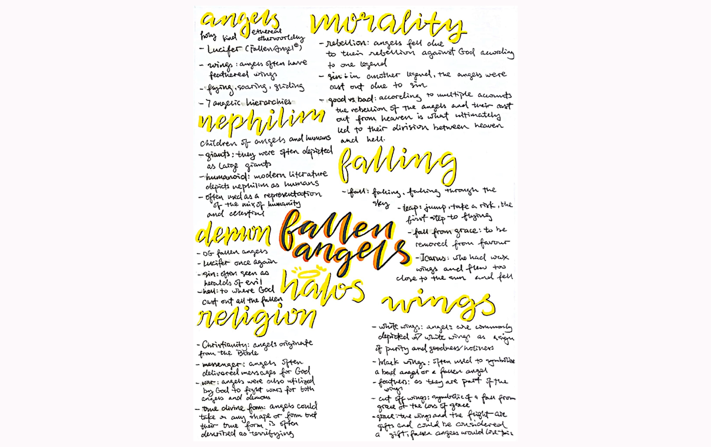
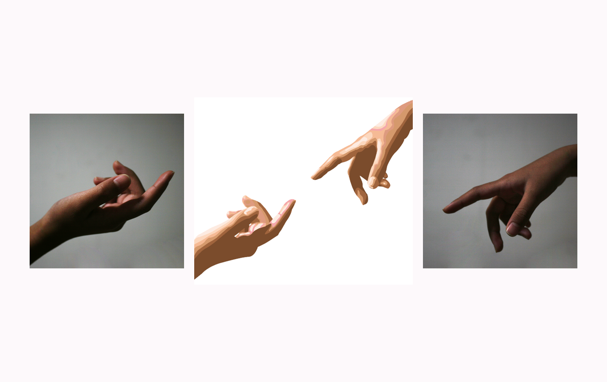
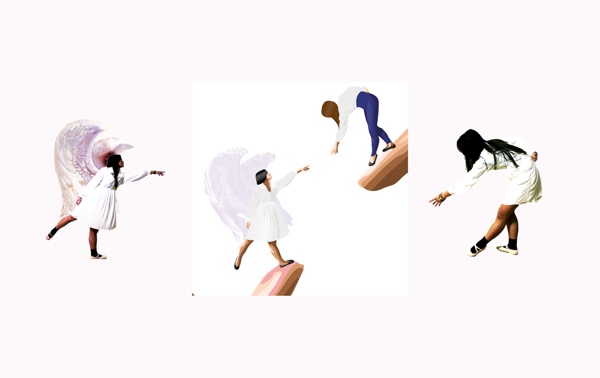
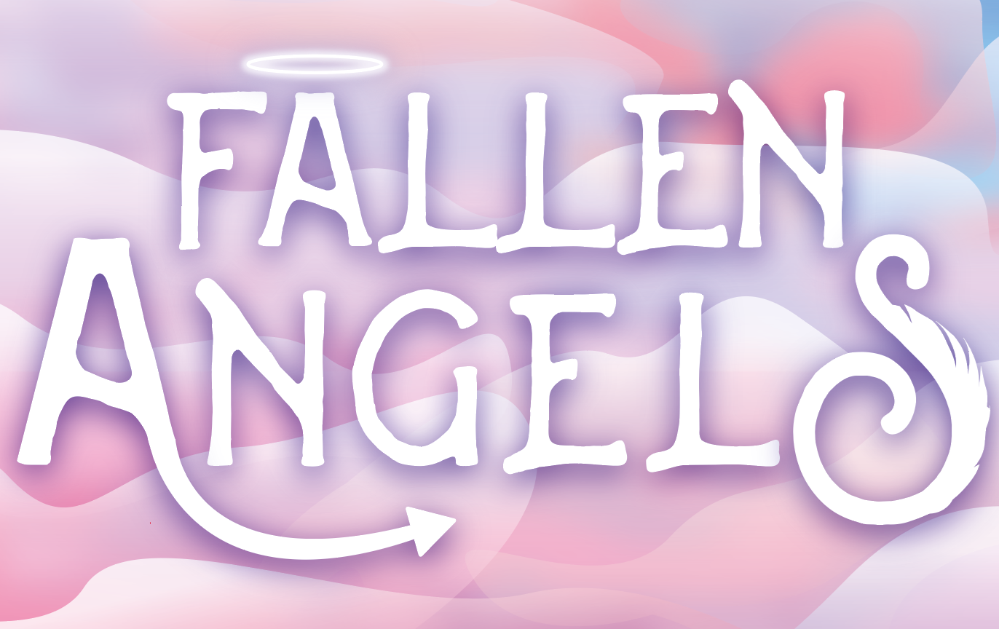
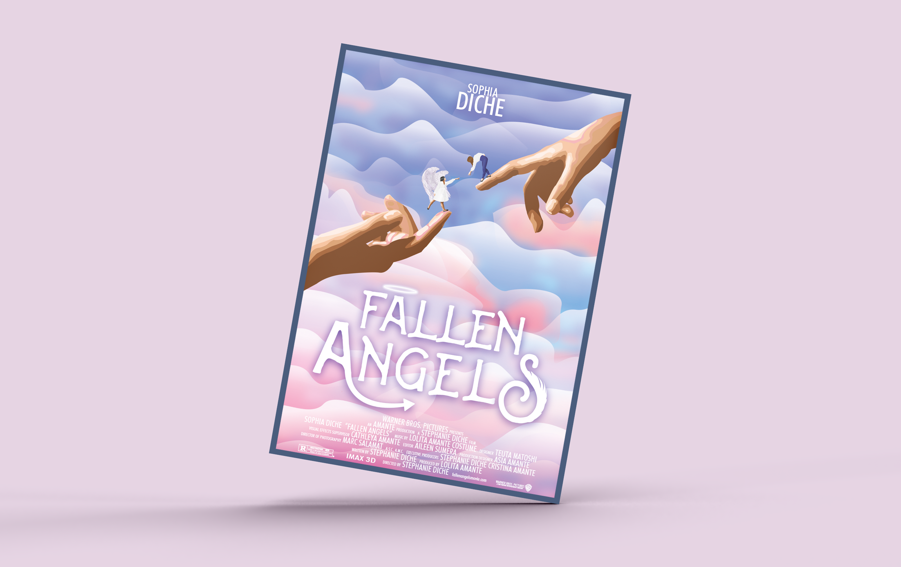

Angels long to be human in a fantasy thriller sure to be your summer blockbuster.
Inspired by Michaelangelo’s The Creation of Adam and ET, an angel reaches out to their human counterpart longingly. Photographs were taken of hands, poses, and skies and traced in Illustrator. Using proportion and contrast, gigantic hands bring two figures together. Bubblegum skies set a mystical and fantastical backdrop for a modified title in line with the genre and concept.
Fallen Angels
Digital Illustration





